FamilySearch Tree: In August 2014 FamilySearch introduced a new app. The FamilySearch Tree app was created to make doing family history easier and a lot more fun to do by connecting you to ancestors, their life stories, and photos. The ability to quickly add information, photos, and stories coupled with the technology of a mobile device make the app a great way to do family history. This is the story of how I helped others to discover their family's legacy.
Tools Utilized the Most: Whiteboard, Markers, Post-It notes, Notebook, Slack, Trello, Sketchapp, Invisionapp, Lookback User Testing software.
My Role
I worked alongside another UX designer to create a new experience for capturing memories using the mobile app. I took this project through the process of research, ideation, prototyping, and testing. The process continues as I continually improve the app. You can find it here.
The Task
I was asked to create a better experience for recording audio on the app. At the time, functionality was very basic. The user could record using the microphone on their phone or tablet and save it on FamilySearch. However now that I had provided the user with a great tool, I wondered how I could instigate a more meaningful experience with it.
The User's Intent
Although I was tasked with improving the functionality recording audio, I knew the design changes should be influenced by the intent of the users. As I listened to their feedback received a lot of requests for interviews to be added as a part of the audio recordings. As it currently stood, the user just hit "record" and away they went with no clear direction. I hoped that by helping the user conduct an interview the audio recordings would have more purpose.
Focusing on Connection
I studied other apps with similar functionality to find ideas and see what's working. I tested these other apps to see the different ways to interview. I found that good interviews involve good questions. Good questions give direction, jog one’s memory, and inspire thought. I gathered questions that could hopefully be used between any two people. Questions like "What is a memorable moment from your childhood?" and "What is a life lesson that has stuck with you?". These questions resonated well with people. They were open ended and interesting. Surprisingly I discovered that some of the best responses came when I asked questions like "What has been a difficult part of your life?". That question in particular created a level of connection that could reach most everyone. I think difficulties are a topic we typically avoid, but we all share in common.
One user said it best, "It helped me accept that bad things happen, and that’s okay. When they happen to me I’ll get through it, just like everyone before me has."
Two Approaches
As I began sketching and creating a flow for audio interviews, I approached the goal in two ways: One flow helped the user prepare a list of questions. They would decide who they were going to interview, pick questions that believed were relevant, and the cycle through those questions as the mobile app recorded the entire thing. The second flow was to break the interview up into snackable bites of audio recordings. One topic to begin with. Then when you're ready, pick the next one and go again.
Pros and Cons
1. All at once or 2. One at a time
In the end I decided to pick option 2 for the benefits seemed better and tested well with users.
Finally, Design
In order to test the idea those sketches turned into wireframes and became a rough prototype. Testing revealed some UI pain points that I quickly changed. The flow was simplified to less screens as some of the tasks in the flow were combined, and I developed a list of 9 topics to start out with and also gave the user the ability to jump into a basic recording without a question.
Product Testing
I tested this flow with multiple users. Most of the tests went smoothly and resulted in new ideas for the next version. Feedback so far has been very positive and have resulted in some amazing moments for users. Go ahead and check it out for yourself!


 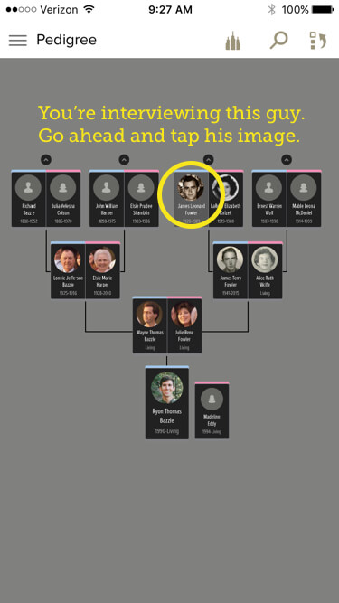
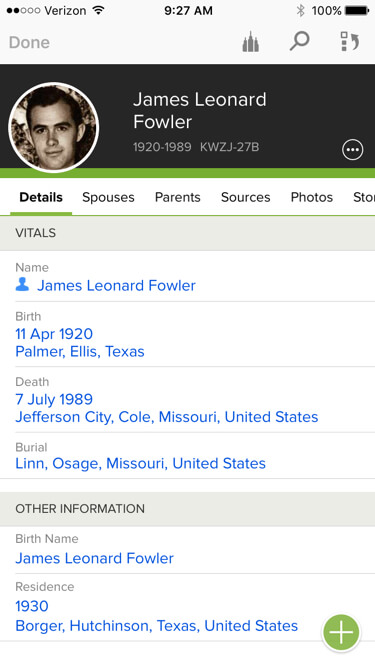
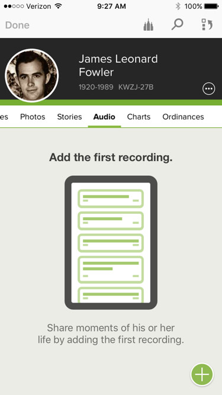
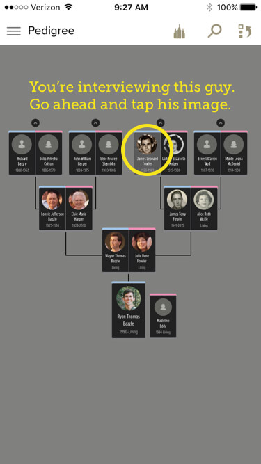
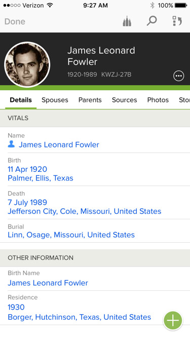
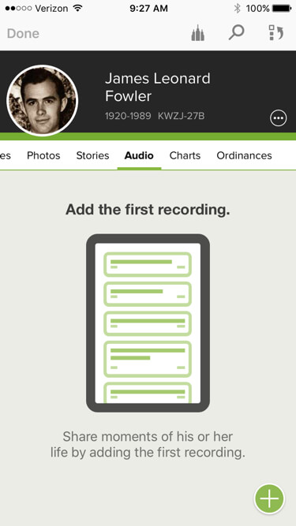
 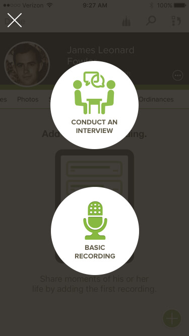
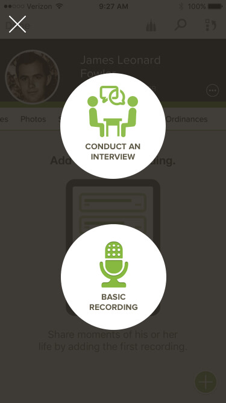

 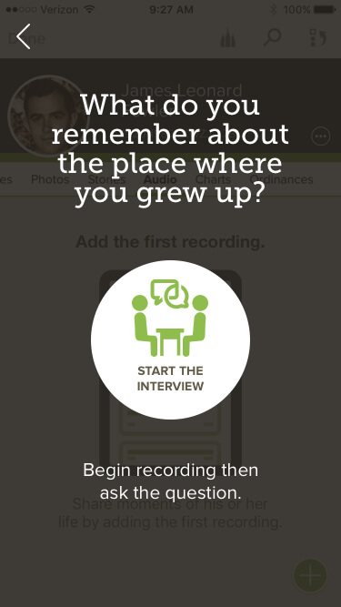
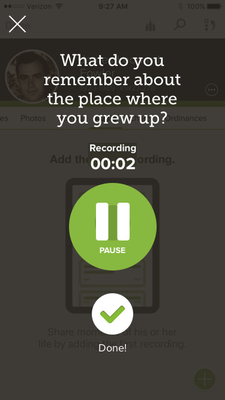
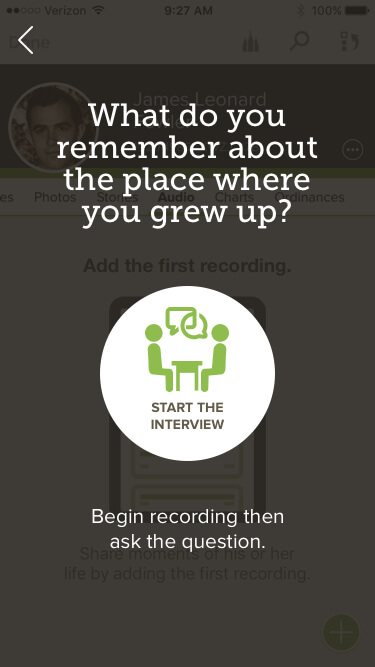
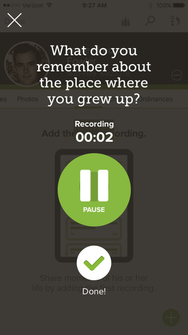
 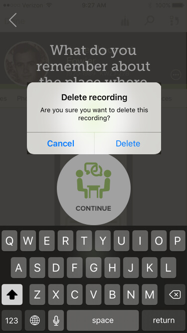
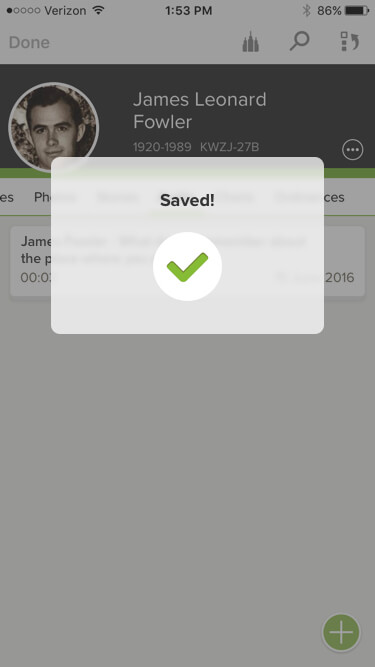
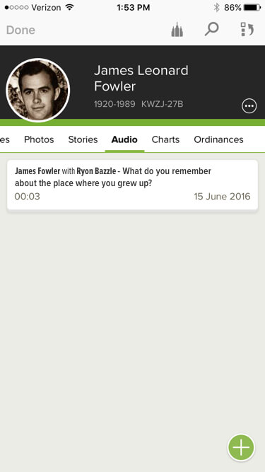
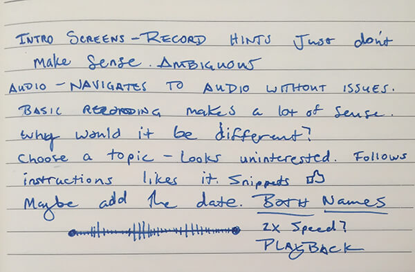
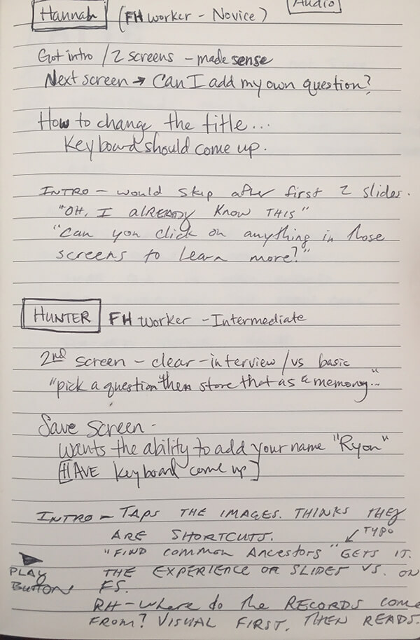
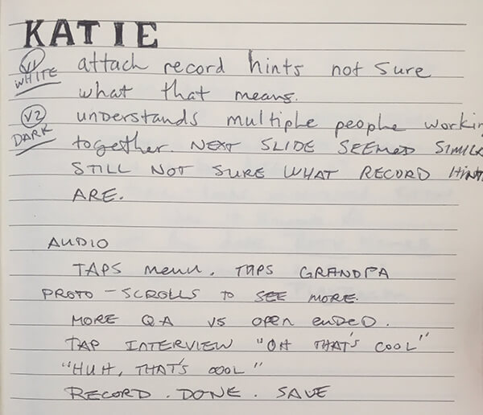
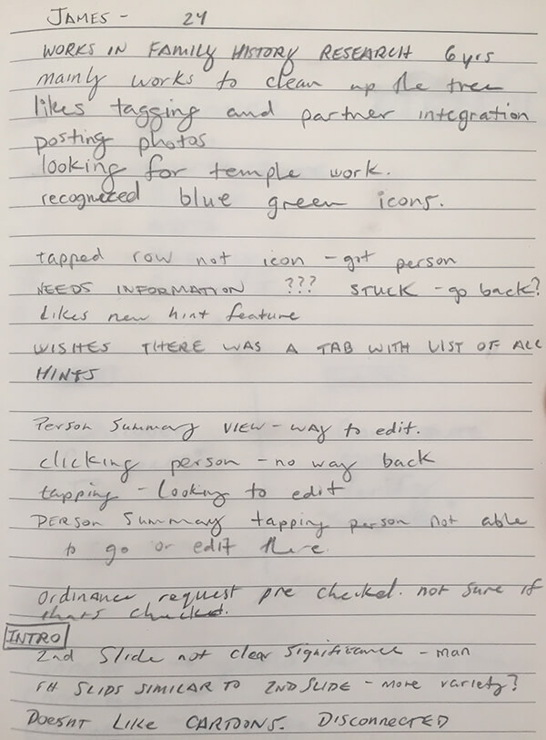
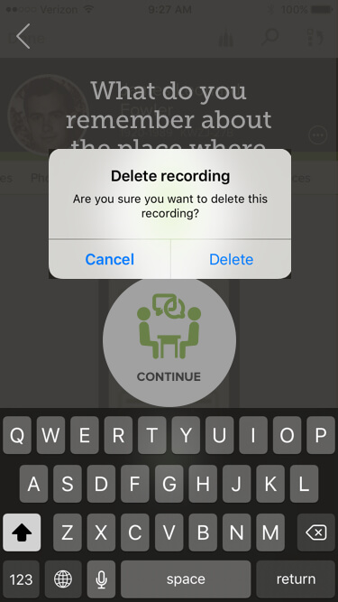
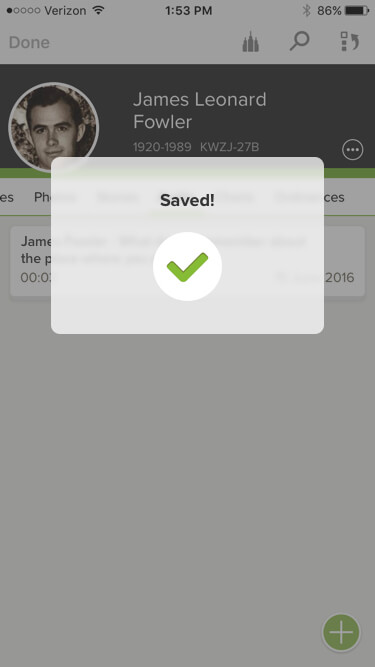
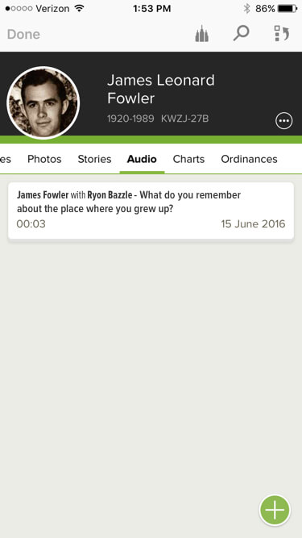
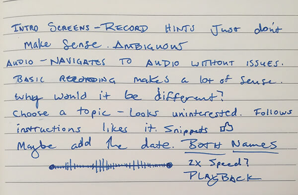
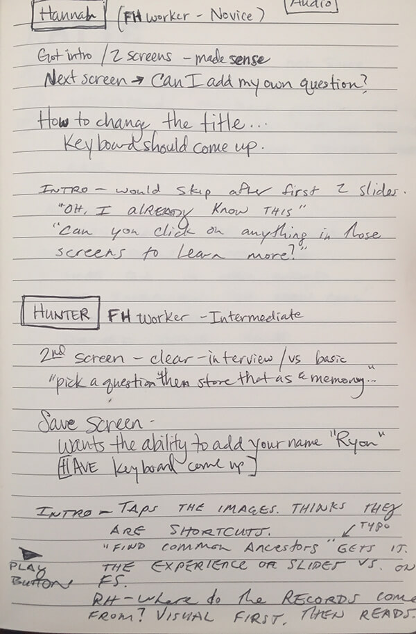
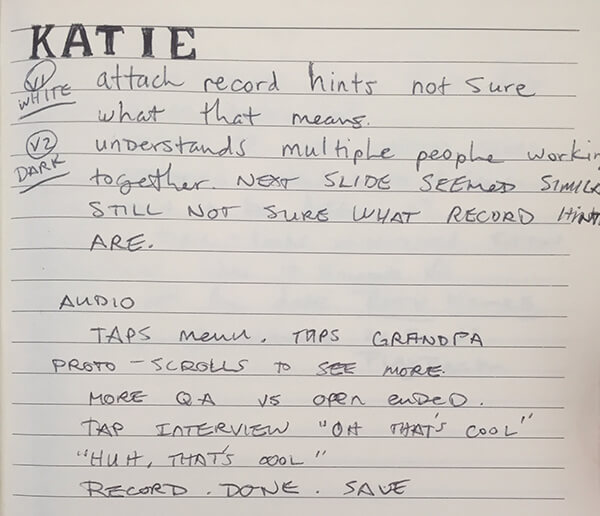
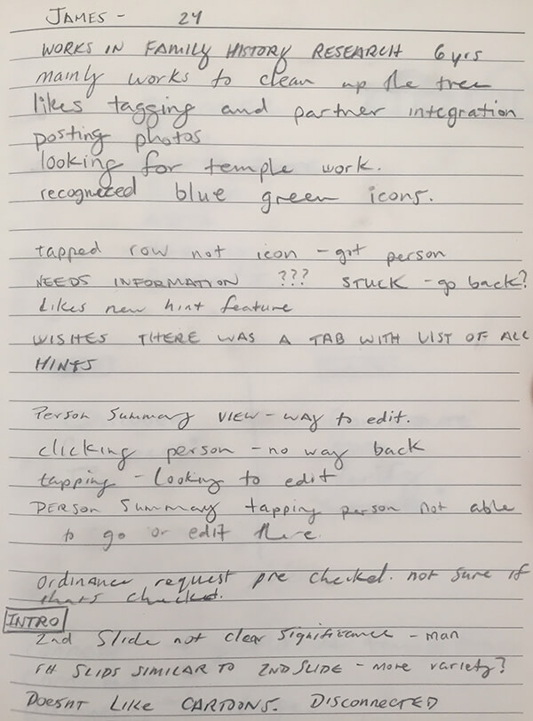